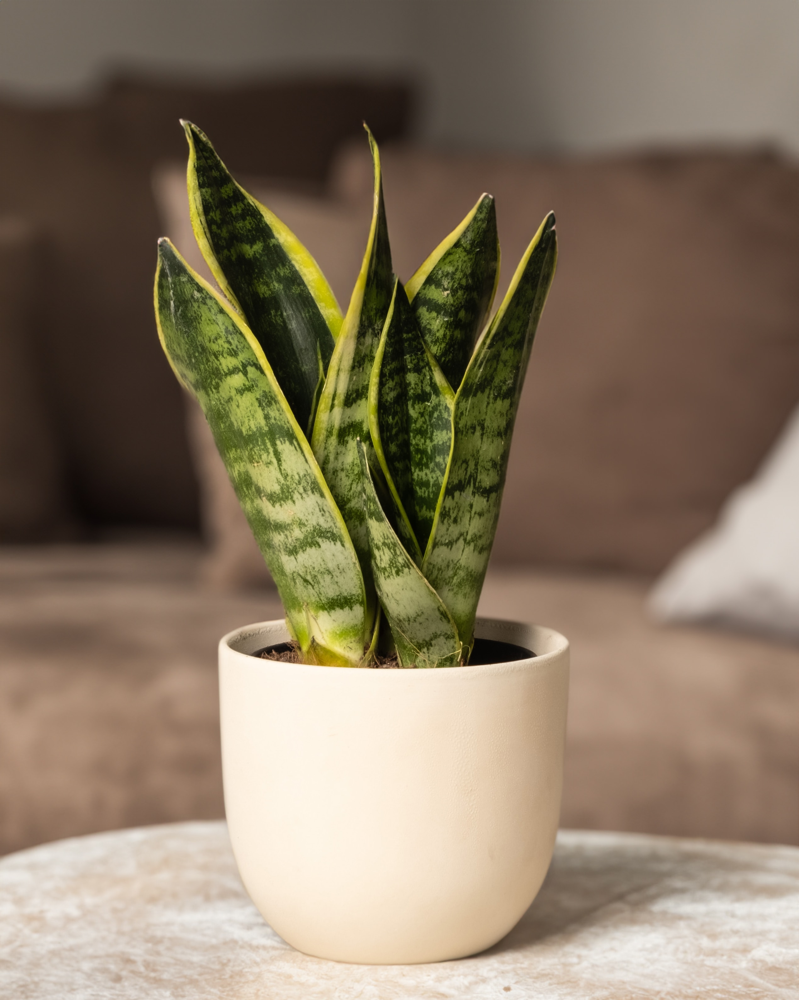

Snake Plant
Dracaena trifasciata
Size
The size can range from 6 inches to 2 feet tall.
Soil
Sandy, well-drained - snake plants prefer a loose, well-drained potting soil mix.
Water
Water every two to eight weeks, but ensure that the soil is dry before watering.
Sunlight
Warm, bright light and grow well with eight to ten hours of indirect sunlight or a few hours of early morning direct sunlight.
Temperature and Humidity
Normal humidity levels of around 40% are best for snake plants. They grow best in warm temperatures between 70 and 90 degrees Fahrenheit.